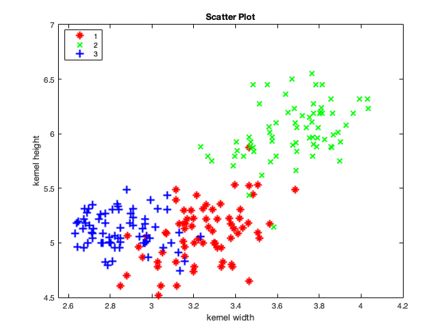

data = readtable('seeds.csv');
kernel_width = data.Var5;
kernel_height = data.Var7;
variety = data.Var8;
disp('1a)');
figure(1)
gscatter(kernel_width, kernel_height, variety, 'rgb', '*x+', 8, 'on', 'kernel width', 'kernel height')
title('Scatter Plot')
snapnow;
X = [kernel_width kernel_height];
Y = variety;
disp('1b)');
centroids = [X(1,:) ; X(2,:); X(3,:)];
K=3;
disp('Initial cluster centers = 1st, 2nd and 3rd datapoints.');
perform_kmeans(X, centroids, K, 2);
disp('1d)');
centroids = [X(1,:) ; X(80,:); X(150,:)];
K=3;
disp('Initial cluster centers = 1st, 80th and 150th datapoints.');
perform_kmeans(X, centroids, K, 4);
disp('K-means converges faster. This makes sense, in the initialistaion there is one centroid for each cluster, i.e. these centroids are spread across.');
function cluster_idx = assign_clusters(centroids, X, K)
temp = [];
for i=1:K
temp = [ temp vecnorm(X-centroids(i,:), 2, 2)];
end
[~, cluster_idx] = min(temp, [], 2);
end
function centroids = reassign_centroids(cluster_idx, X, K)
centroids = [];
for i=1:K
points = X(cluster_idx==i, :);
sz = size(points,1);
centroids = [centroids ; [(1/sz) * sum(points(:,1)), (1/sz) * sum(points(:,2))]];
end
end
function total_sum= calculate_cost(X, idx, centroids)
total_sum = 0;
for k=1:size(centroids,1)
c = centroids(k,:);
total_sum = total_sum + sum(vecnorm((X(idx==k,:)-c),2,2));
end
end
function perform_kmeans(X, centroids, K, fig_no)
kernel_width = X(:,1);
kernel_height = X(:,2);
max_iterations = 20;
centroids_0_to_3_iter = [centroids];
cluster_idx_0_to_3 = [];
prev1=0;
prev2=0;
for i=1:max_iterations
cluster_idx = assign_clusters(centroids, X, K);
cur = calculate_cost(X, cluster_idx, centroids);
if(i> 2 && cur == prev1 && cur == prev2)
fprintf("k-means converged at i=%d \n", i-1);
final_cluster_idx = cluster_idx;
final_centroids = centroids;
break
end
prev1 = prev2;
prev2 = cur;
centroids = reassign_centroids(cluster_idx, X, K);
if i <=3
centroids_0_to_3_iter = [centroids_0_to_3_iter; centroids];
cluster_idx_0_to_3 = [cluster_idx_0_to_3; cluster_idx];
end
end
cluster_idx_0_to_3 = [cluster_idx_0_to_3; cluster_idx];
disp('Scatter plot');
sz = size(X,1);
figure(fig_no)
for j=0:3
subplot(2,2,j+1);
start_idx = sz*j + 1;
gscatter(kernel_width, kernel_height, cluster_idx_0_to_3(start_idx:start_idx+sz-1,:), 'rgb', '*x+', 8, 'on', 'kernel width', 'kernel height');
hold on;
start_idx = 3*j + 1;
plot(centroids_0_to_3_iter(start_idx:start_idx+2,1), centroids_0_to_3_iter(start_idx:start_idx+2,2), '.k', 'MarkerSize', 15);
title(strcat('Iteration No.', int2str(j)));
legend('1', '2', '3','centroids');
end
snapnow;
disp('Scatter plot');
sz = size(X,1);
figure(fig_no+1)
gscatter(kernel_width, kernel_height, final_cluster_idx, 'rgb', '*x+', 8, 'on', 'kernel width', 'kernel height');
hold on;
plot(centroids(:,1), centroids(:,2), '.k', 'MarkerSize', 15);
title('After convergence');
legend('1', '2', '3','centroids');
snapnow;
end
1a)

1b)
Initial cluster centers = 1st, 2nd and 3rd datapoints.
k-means converged at i=17
Scatter plot
Scatter plot

1d)
Initial cluster centers = 1st, 80th and 150th datapoints.
k-means converged at i=8
Scatter plot
Scatter plot
K-means converges faster. This makes sense, in the initialistaion there is one centroid for each cluster, i.e. these centroids are spread across.